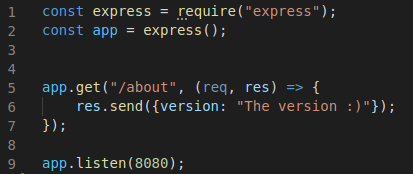
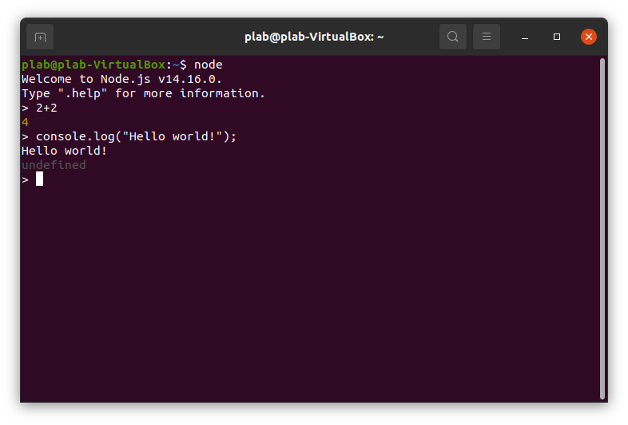

About NodeJS
NodeJS is an open-source JavaScript runtime environment, with a focus on easy networking features.
In the words of the maintainers of NodeJS themselves:
"Node.js has a unique advantage because millions of frontend developers that write JavaScript for the browser are now able to write the server-side code in addition to the client-side code without the need to learn a completely different language."
Throughout this semester I have utilized NodeJS to build and serve webpages, such as the one you're viewing right now. The following section will show how to setup a simple Node project.
The two single most important files for a NodeJS project are app.js and package.json.
App.js
App.js is the file wherein we define the behaviour of our program. It's in this file where we declare our endpoints and serve web pages. Since it's a .js file, we follow JavaScript syntax and even write our own js functions.
The commonly-used structure for app.js files have imports declared at the top, the port listening at the bottom and everything else in between.

Package.json
Package.json is the file we developers can use to configure our program's settings. Json, short for JavaScript Object Notation, is a way formatting data. This is done in Key-Value Pairs (KVP). A single key can have multiple values provided that they're enclosed by curly-brackets and separated by commas.
In a package.json file, the first thing we declare is a block spanning the entire file. In this scope, we can write the keys of settings we wish to change. By using the "dependencies" key, we can declare what modules our program will need to run. These modules can and need to be downloaded, which can be done through use of the npm command.

Node Package Manager
Npm is the Node Package Manager, which for our purposes just means it is what we use to manage our dependencies.
Npm comes bundled in with a NodeJS download, since the latter would be virtually useless without it. Note that npm is not the command responsible for executing NodeJS programs.
The two commands you absolutely need to know are
npm install
npm uninstall
For adding and removing modules respectively. If no modules are specified, install will download all the packages listed as dependencies in your package.json, while uninstall will removed all installed modules for the project.
Node & Nodemon
The node command is what we use to run our NodeJS project. To do so, simply run node app.js.
Please note that any changes made to your program while the node command is running will not be reflected until you re-run the command.
With no arguments, the node command brings up the REPL, which is short for Read-Eval-Print-Loop. In this window, you can write simple JavaScript expressions and see what they evaluate as.
Although the node command works just fine, I have during the course been introduced the tool "Nodemon", which allows you to swap the node command with nodemon instead. The biggest benefit this provides is a real-time reflection of any changes made to your project, meaning you won't need to re-run your application to see if you've fixed that syntax error.
Nodemon can be installed through the use of npm and doesn't need to be declared in your package.json.
